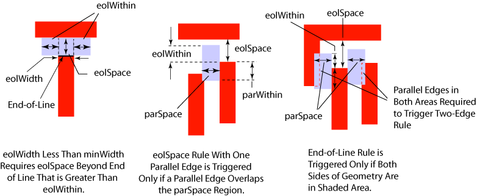

|
 |
 |
||||||
|
|
|
||||||
The built-in layer constraint oacMinEndOfLineSpacing specifies the minimum spacing between the end of a line and its neighboring geometry. The constraint uses an integer value to specify the minimum spacing. The constraint definition can use the following optional parameters to specify when the constraint applies:
| Constraint type: | oaLayerConstraint |
| Value types: | oaIntValue |
| Database types: | oaDesign, oaTech |
| Object types: | oaAppObject |
The following value types are supported by this constraint:
The oacMinEndOfLineSpacing constraint has an oaIntValue.
Units: DBU
The following parameters are supported by this constraint:
| Name | Value Type | Units | Default | Description | ||||||||
|---|---|---|---|---|---|---|---|---|---|---|---|---|
| width oacWidthConstraintParamType |
oaIntValue | DBU | None |
End-of-line width, which uses an oacWidthConstraintParamType with an oaIntValueType value. |
||||||||
| distance oacDistanceConstraintParamType |
oaIntValue | DBU | None |
Lateral verification distance, which uses oacDistanceConstraintParamType with an oaIntValueType value. |
||||||||
| parallelEdgeSpace oacParallelEdgeSpaceConstraintParamType |
oaIntValue | DBU | None |
Distance perpendicular to a wire, which uses an oacParallelEdgeSpaceConstraintParamType with an oaIntValueType value. |
||||||||
| parallelEdgeWithin oacParallelEdgeWithinConstraintParamType |
oaIntValue | DBU | None |
Distance along a wire, which uses an oacParallelEdgeWithinConstraintParamType with an oaIntValueType value. |
||||||||
| equalRectWidth oacEqualRectWidthConstraintParamType |
oaBooleanValue | Boolean | False |
If this parameter is set to true, it implies that the length of the end-of-line edge is larger than the wire width. In such cases, this rule does not apply. |
||||||||
| count oacCountConstraintParamType |
oaIntValue | Count | 0 |
Number of parallel edges that trigger this constraint, which uses an oacCountConstraintParamType with an oaIntValueType value of 0, 1, or 2. |
||||||||
| endToEndSpacing oacEndToEndSpacingConstraintParamType |
oaIntValue | DBU | None |
This parameter specifies the spacing between two lines that are placed end-to-end and have a non-zero parallel run length. |
||||||||
| enclosedDistance oacEnclosedDistanceConstraintParamType |
oaIntValue | DBU | None |
This parameter specifies the distance from a cut below or above the metal layer from the end-of-line edge. |
||||||||
| maxLength oacMaxLengthConstraintParamType |
oaIntValue | DBU | None |
The end of line spacing rule does not apply if the length of the line is greater than maxLength. |
||||||||
| minOppositeWidth oacMinOppositeWidthConstraintParamType |
oaIntValue | DBU | None |
The perpendicular span opposite to the end of line edge should be greater than the value of this parameter else this constraint does not apply. |
||||||||
| otherEndWidth oacOtherEndWidthConstraintParamType |
oaIntValue | DBU | None |
This constraint applies only if the opposite line's width is greater than otherEndWidth. |
||||||||
| subtractEndOfLineWidth oacSubtractEndOfLineWidthConstraintParamType |
oaBooleanValue | Boolean | False |
This parameter indicates that the spacing to parallel lines (parSpace) value should be subtracted by the width of the end-of-line edge to define the distance for searching a parallel neighbor edge. |
||||||||
| parallelEdgeMinLength oacParallelEdgeMinLengthConstraintParamType |
oaIntValue | DBU | None |
This parameter specifies the minimum end of line length for parallel edge check. |
||||||||
| minLength oacMinLengthConstraintParamType |
oaIntValue | DBU | None |
This constraint applies if the length is >= minLength on both sides. If both lengths are < minLength, this rule does not apply. |
||||||||
| twoSides oacTwoSidesConstraintParamType |
oaBooleanValue | Boolean | False |
If twoSides is true, the line must be >= minLength on both sides else this constraint does not apply. |
||||||||
| cutToMetalSpacing oacCutToMetalSpacingConstraintParamType |
oaIntValue | DBU | None |
This parameter specifies the cut edge to metal edge space. |
||||||||
| enclosedCut oacEnclosedCutConstraintParamType |
oaIntValue | Enum | All |
This parameter specifies whether the constraint applies to above, below, or all metal cuts for this metal layer This parameter is represented by an oaEnclosedCutType enumeration:
|
||||||||
| allCuts oacAllCutsConstraintParamType |
oaBooleanValue | Boolean | False |
This parameter is set to true if the constraint applies to all cuts that connect to the same metal shapes above and below. If this constraint parameter is missing or false, only one cut must satisfy the rule. |

This constraint is used for spacing shapes on the same layer when there is a dense configuration of neighboring shapes on the same layer.
Copyright 2002 - 2010 Cadence Design Systems, Inc.
All rights reserved.